Arquitetura de Backend, HTTP e API
Dos fundamentos da comunicação web à implementação com net/http em Go
"Um backend consistente não nasce de endpoints nem de frameworks. Nasce do entendimento profundo de protocolos, contratos bem definidos, regras de negócio isoladas, gerenciamento de estado, segurança aplicada em camadas e operação pensada desde o primeiro commit. Código é consequência. Decisão é fundamento."
🚀 Início Rápido
Baixe o projeto e hospede esta documentação localmente em segundos.
git clone https://github.com/jeffotoni/go-nethttp-learn
cd go-nethttp-learnUsando nosso servidor estático embutido.
go run static/main.goServidor HTTP da biblioteca padrão.
python3 -m http.server 3000Usando o utilitário npx serve.
npx serve .✦ Sobre o autor
Engenheiro de Software Sênior e Arquiteto de Soluções com mais de 22 anos de experiência. Especialista em design de APIs, arquitetura cloud-native e ecossistema Go. Criador do Quick Framework e autor do Go Bootcamp.
Recursos Oficiais
1. Contexto: Web Services, REST e Protocolos
Panorama de Web Services
| Estilo | Ano | Característica Principal |
|---|---|---|
| SOAP | 1998 | Contrato rígido, XML, WSDL |
| REST | 2000 | Estilo arquitetural sobre HTTP |
| WebHooks | 2007 | Callback HTTP orientado a eventos |
| WebSocket | 2011 | Conexão bidirecional sobre HTTP |
| SSE | 2006 | Servidor envia eventos sobre HTTP |
| GraphQL | 2015 | Cliente define campos da resposta |
| gRPC | 2015 | RPC com Protobuf sobre HTTP/2 |
Diagramas de Comunicação
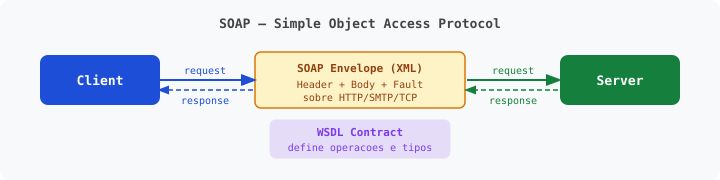
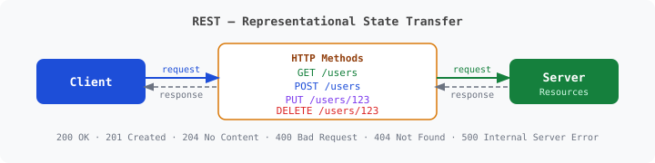
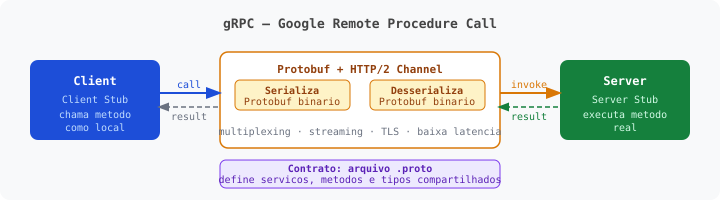
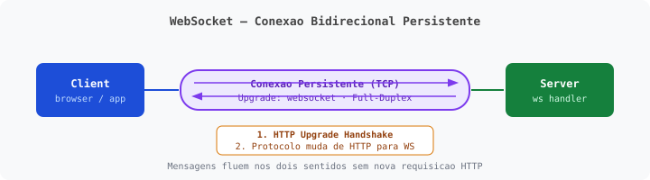
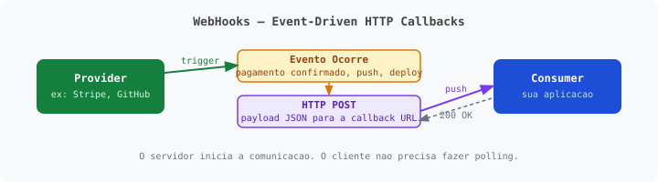
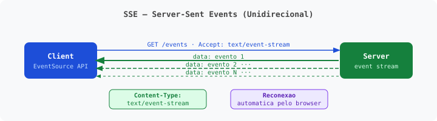
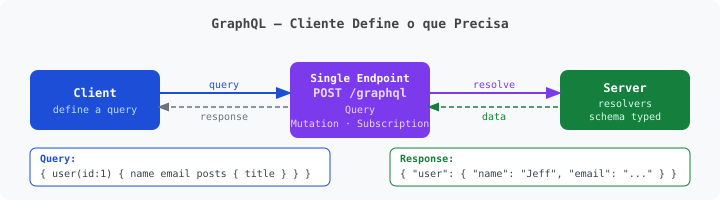
Evolução do HTTP
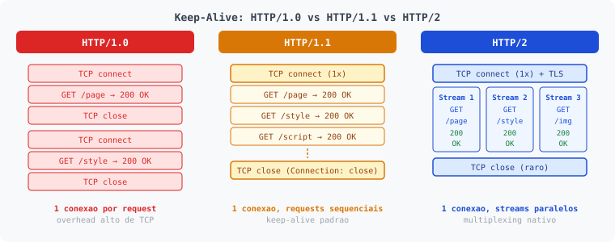
O HTTP/1.1 introduziu o Keep-Alive por padrão, permitindo múltiplas requisições em uma única conexão TCP.
Status Codes HTTP
Os status codes são agrupados em cinco categorias, cada uma iniciando com um dígito específico (1xx a 5xx).
| Categoria | Significado | Exemplos Comuns |
|---|---|---|
1xx | Informacional | 101 Switching Protocols |
2xx | Sucesso | 200 OK, 201 Created, 204 No Content |
3xx | Redirecionamento | 301 Moved Permanently, 302 Found |
4xx | Erro do Cliente | 400 Bad Request, 401 Unauthorized, 404 Not Found |
5xx | Erro do Servidor | 500 Internal Server Error, 503 Service Unavailable |
Modelo de Maturidade de Richardson
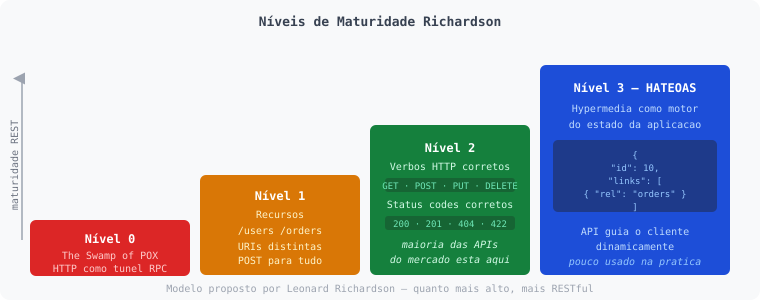
HTTP como túnel (RPC).
URIs separadas para recursos.
Uso correto de GET, POST, PUT, DELETE.
Hipermídia guia o cliente.
2. Visão Geral de Go para APIs
- Biblioteca padrão forte (
net/http,encoding/json) - Compilação rápida e deploy de binário único
- Concorrência nativa (goroutines & channels)
- Alta performance para APIs de baixa latência
Teoria de Concorrência
Threads leves gerenciadas pelo runtime do Go.
go doWork() // Execução não-bloqueantePipes que conectam goroutines concorrentes para comunicação.
ch := make(chan int)
go func() { ch <- 42 }()
val := <-chExemplos de Compilação Cruzada
# Compilar para Linux AMD64 (de qualquer OS)
GOOS=linux GOARCH=amd64 go build -o server-linux main.go
# Compilar para Windows
GOOS=windows GOARCH=amd64 go build -o server.exe main.go
# Compilar para ARM (Raspberry Pi)
GOOS=linux GOARCH=arm64 go build -o server-arm main.goPalavras-chave Oficiais da Linguagem (25)
break | default | func | interface | select |
case | defer | go | map | struct |
chan | else | goto | package | switch |
const | fallthrough | if | range | type |
continue | for | import | return | var |
3. Fundamentos do net/http
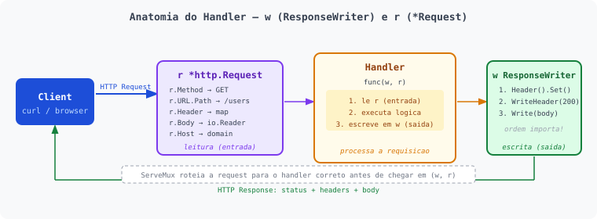
Usado para construir a resposta. Ordem: Headers -> Status -> Corpo.
w.Header().Set("Content-Type", "application/json")
w.WriteHeader(http.StatusCreated)
w.Write([]byte(`{"ok":true}`))Contém todos os dados do cliente: Método, URL, Header, Corpo, PathValue.
id := r.PathValue("id")
q := r.URL.Query().Get("search")
body := r.Body4. Manual Prático: ListenAndServe (Fase Zero)
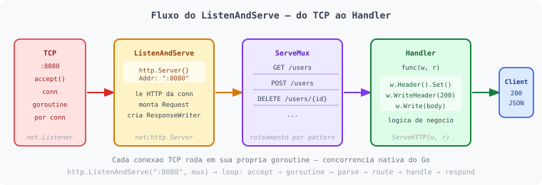
Linha de raciocínio da aula
| Ordem | Foco | Resultado para o aluno |
|---|---|---|
| 1 | HandleFunc vs HandlerFunc | Evita erros comuns de registro |
| 2 | O que ListenAndServe aceita | Sabe como passar nil, HandlerFunc, ServeMux ou tipo customizado |
| 3 | Variações base sem ServeMux customizado | Domina o fluxo básico HTTP |
| 4 | Lendo a requisição | Extrai método, caminho, query, headers, corpo, PathValue |
| 5 | Escrevendo a resposta | Sabe a ordem correta: Headers -> Status -> Corpo |
| 6 | Exemplos CRUD completos | GET, POST, PUT, PATCH, DELETE com casos reais |
| 7 | http.Server com timeouts | Configura o servidor para produção |
| 8 | Composição de Middleware | Logger, Auth, cadeia de comportamento |
| 9 | Padronização de resposta | Motivação para writeJSON |
| 10 | Graceful shutdown | Encerra o servidor de forma limpa sem perder requisições |
| 11 | Testando com httptest | Testa handlers sem iniciar um servidor real |
4.3 Variações Base
Exemplo 4.3.1 - DefaultServeMux com HandleFunc
http.HandleFunc("/", func(w http.ResponseWriter, r *http.Request) {
w.Write([]byte("Home"))
})
log.Fatal(http.ListenAndServe(":8080", nil))Exemplo 4.3.2 - DefaultServeMux com Handle
http.Handle("/", http.HandlerFunc(func(w http.ResponseWriter, r *http.Request) {
w.Write([]byte("Home"))
}))
log.Fatal(http.ListenAndServe(":8080", nil))Exemplo 4.3.3 - Roteamento manual direto
log.Fatal(http.ListenAndServe(":8080",
http.HandlerFunc(func(w http.ResponseWriter, r *http.Request) {
switch r.URL.Path {
case "/": w.Write([]byte("Home"))
case "/api": w.Write([]byte("API"))
default: http.NotFound(w, r)
}
}),
))4.4 Exemplos Práticos
Exemplo 4.4.1 - Parâmetros de URL (r.URL.Query)
http.HandleFunc("/hello", func(w http.ResponseWriter, r *http.Request) {
name := r.URL.Query().Get("name")
fmt.Fprintf(w, "Hello, %s!", name)
})Exemplo 4.4.2 - Resposta JSON
http.HandleFunc("/api/user", func(w http.ResponseWriter, r *http.Request) {
w.Header().Set("Content-Type", "application/json")
json.NewEncoder(w).Encode(map[string]string{"name": "John", "role": "Developer"})
})Exemplo 4.4.6 - r.PathValue (Go 1.22+)
mux.HandleFunc("GET /users/{id}", func(w http.ResponseWriter, r *http.Request) {
id := r.PathValue("id")
fmt.Fprintf(w, `{"id":"%s"}`, id)
})4.7 Graceful Shutdown
quit := make(chan os.Signal, 1)
signal.Notify(quit, syscall.SIGINT, syscall.SIGTERM)
<-quit
ctx, cancel := context.WithTimeout(context.Background(), 10*time.Second)
defer cancel()
if err := srv.Shutdown(ctx); err != nil {
log.Fatal("Shutdown falhou:", err)
}4.9 Dois Servidores em Portas Distintas com Goroutines
func main() {
mainServer := &http.Server{Addr: ":8080", Handler: newMainMux()}
mockServer := &http.Server{Addr: ":3000", Handler: newMockMux()}
go func() {
if err := mainServer.ListenAndServe(); err != nil && err != http.ErrServerClosed {
log.Fatalf("erro: %v", err)
}
}()
log.Fatal(mockServer.ListenAndServe())
}5. Arquitetura de API Server
5.2 Mapa de erros e status por cenário
| Cenário | Status Code | Quando usar |
|---|---|---|
| JSON Inválido | 400 | Corpo malformado |
| Campo inválido / ausente | 422 | Corpo válido, mas regra de negócio inválida |
| Content-Type incorreto | 415 | Esperado application/json |
| Recurso não encontrado | 404 | ID/caminho não existe |
| Método não permitido | 405 | Endpoint existe, método não |
| Conflito de estado | 409 | Ex.: email já cadastrado |
| Erro interno | 500 | Falha inesperada do servidor |
5.9 Documentação com OpenAPI
Exemplo de servir um Swagger UI manualmente (HTML escapado):
mux.HandleFunc("GET /docs", func(w http.ResponseWriter, r *http.Request) {
w.Header().Set("Content-Type", "text/html")
w.Write([]byte(`
<!DOCTYPE html>
<html>
<head>
<link rel="stylesheet" href="https://unpkg.com/swagger-ui-dist/swagger-ui.css">
</head>
<body>
<div id="swagger-ui"></div>
<script src="https://unpkg.com/swagger-ui-dist/swagger-ui-bundle.js"></script>
<script>
SwaggerUIBundle({ url: "/openapi.yaml", dom_id: "#swagger-ui" })
</script>
</body>
</html>
`))
})6. Docker: Build e Run
6.1 Dockerfile Multi-stage
FROM golang:1.25.6-alpine AS builder
WORKDIR /src
COPY . .
RUN go build -o /out/server main.go
FROM alpine:3.20
COPY --from=builder /out/server /app/server
USER nobody:nobody
ENTRYPOINT ["/app/server"]6.2 Comandos Básicos do Docker
docker build -t nethttp-server:local .docker run -d --name nethttp-server -p 8080:8080 nethttp-server:localdocker logs -f nethttp-serverdocker stop nethttp-server && docker rm nethttp-server